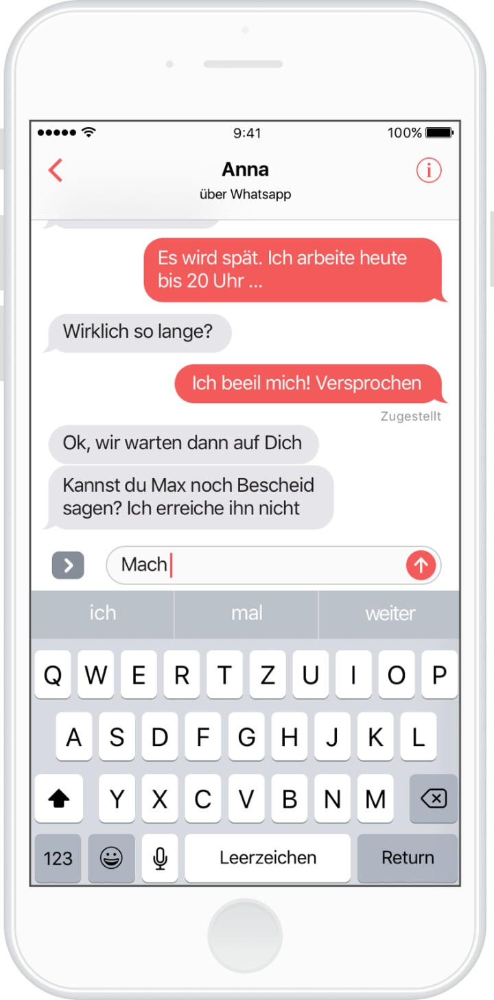

OneChat verbindet
alle Deine Netzwerke
OneChat verbindet sich problemlos mit allen Netzwerken, die Du nutzt. Dafür musst Du lediglich Deinen Namen und Dein Passwort eingeben. Mit Diensten, die nur Deine Handynummer benötigen (z.B. Whatsapp), verbindet sich OneChat sogar ganz automatisch. Danach kannst Du mit einer einzigen App alle Deine Freunde erreichen. Einfacher geht es wirklich nicht.